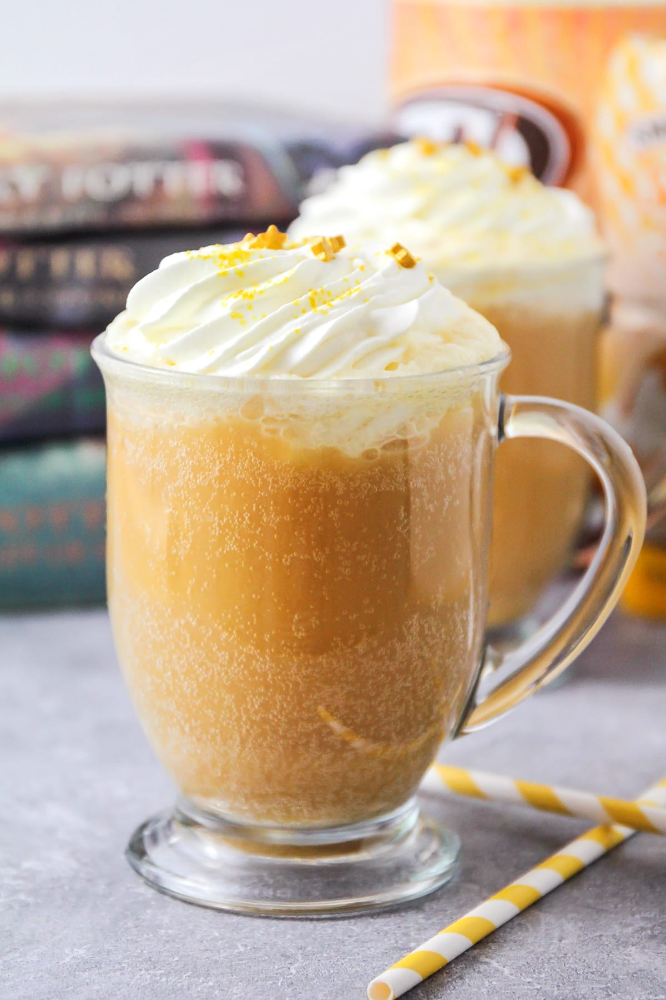

Butterbeer

Description
This is Butterbeer, a drink enjoyed by all wizards!
It has a very distinct butterscotch taste.
Ingredients
- 3 bottles of ale
- 1 1/2 tsp. pumpkin pie spice
- 1 cup brown sugar
- 5 egg yolks (save the whites for something like meringue)
- 1/2 cup unsalted butter, cut into chunks
Steps
-
Heat the ale and spices in a medium saucepan, over medium heat.
If it has a lot of foam, that should die down once it starts
heating up.
-
In a separate bowl, combine the sugar and egg yolks. while
whisking furiously, pour in a ladle-full of the hot ale.
-
Whisk until it’s incorporated, then pour the whole mess back into
the pot of ale, still whisking madly.
-
Keep the mixture just under a simmer, stirring until it thickens
somewhat.
-
Add the chunks of butter and stir until they’re melted.
-
Whisk with a hand mixer (or a lot of arm strength), until a
foam rises.
-
Serve hot, in heat-proof mugs.